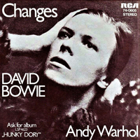
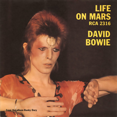

1971 - HUNKY DORY |
||||
When David Bowie entered photographer Brian Ward's studio for the Hunky Dory photo shoot, the initial idea was to have him pose as a pharaoh. However, Bowie brought with him a photo book which included portraits of Marlene Dietrich. Looking for an image that would reflect the album's "preoccupation with the silver screen", the final shot also nodded to actresses Lauren Bacall and Greta Garbo. Ward's original monochrome photo was recoloured by illustrator Terry Pastor and Bowie's longtime schoolfriend George Underwood - another nod to one of Bowie's celebrity idols, Andy Warhol, and his pop-art screen prints. Photographer: Brian Ward | Illustrators: Terry Pastor, George Underwood |
||||
CHANGES I still don't know what I was waiting for And my time was running wild A million dead-end streets, and Every time I thought I'd got it made It seemed the taste was not so sweet So I turned myself to face me But I've never caught a glimpse Of how the others must see the faker I'm much too fast to take that test Ch-ch-ch-ch-Changes (Turn and face the strain) Ch-ch-Changes Don't want to be a richer man Ch-ch-ch-ch-Changes (Turn and face the strain) Ch-ch-Changes Just gonna have to be a different man Time may change me But I can't trace time I watch the ripples change their size But never leave the stream Of warm impermanence, and So the days float through my eyes But still the days seem the same And these children that you spit on As they try to change their worlds Are immune to your consultations They're quite aware of what they're going through Ch-ch-ch-ch-Changes (Turn and face the strain) Ch-ch-Changes Don't tell them to grow up and out of it Ch-ch-ch-ch-Changes (Turn and face the strain) Ch-ch-Changes Where's your shame You've left us up to our necks in it Time may change me But you can't trace time Strange fascination, fascinating me Changes are taking the pace I'm going through Ch-ch-ch-ch-Changes (Turn and face the strain) Ch-ch-Changes Oh, look out you rock'n'rollers Ch-ch-ch-ch-Changes (Turn and face the strain) Ch-ch-Changes Pretty soon now you're gonna get older Time may change me But I can't trace time I said that time may change me But I can't trace time OH! YOU PRETTY THINGS Wake up you sleepy head Put on some clothes, shake up your bed Put another log on the fire for me I've made some breakfast and coffee Look out my window and what do I see A crack in the sky and a hand reaching down to me All the nightmares came today And it looks as though they're here to stay What are we coming to No room for me, no fun for you I think about a world to come Where the books were found by the Golden ones Written in pain, written in awe By a puzzled man who questioned What we were here for All the strangers came today And it looks as though they're here to stay [CHORUS] Oh You Pretty Things Don't you know you're driving your Mamas and Papas insane Oh You Pretty Things Don't you know you're driving your Mamas and Papas insane Let me make it plain Gotta make way for the Homo Superior Look out at your children See their faces in golden rays Don't kid yourself they belong to you They're the start of a coming race The earth is a bitch We've finished our news Homo Sapiens have outgrown their use All the strangers came today And it looks as though they're here to stay [CHORUS] EIGHT LINE POEM The tactful cactus by your window Surveys the prairie of your room The mobile spins to its collision Clara puts her head between her paws They've opened shops down West side Will all the cacti find a home But the key to the city Is in the sun that pins the branches to the sky LIFE ON MARS? It's a god-awful small affair To the girl with the mousy hair But her mummy is yelling "No" And her daddy has told her to go But her friend is nowhere to be seen Now she walks through her sunken dream To the seat with the clearest view And she's hooked to the silver screen But the film is a saddening bore For she's lived it ten times or more She could spit in the eyes of fools As they ask her to focus on [CHORUS] Sailors fighting in the dance hall Oh man! Look at those cavemen go It's the freakiest show Take a look at the Lawman Beating up the wrong guy Oh man! Wonder if he'll ever know He's in the best selling show Is there life on Mars? It's on Amerika's tortured brow That Mickey Mouse has grown up a cow Now the workers have struck for fame 'Cause Lennon's on sale again See the mice in their million hordes From Ibiza to the Norfolk Broads Rule Britannia is out of bounds To my mother, my dog, and clowns But the film is a saddening bore 'Cause I wrote it ten times or more It's about to be writ again As I ask you to focus on [CHORUS] KOOKS [CHORUS] Will you stay in our Lovers' Story If you stay you won't be sorry 'Cause we believe in you Soon you'll grow so take a chance With a couple of Kooks Hung up on romancing We bought a lot of things to keep you warm and dry And a funny old crib on which the paint won't dry I bought you a pair of shoes A trumpet you can blow And a book of rules On what to say to people when they pick on you 'Cause if you stay with us you're gonna be pretty Kookie too [CHORUS] And if you ever have to go to school Remember how they messed up this old fool Don't pick fights with the bullies or the cads 'Cause I'm not much cop At punching other people's Dads And if the homework brings you down Then we'll throw it on the fire And take the car downtown [CHORUS] QUICKSAND I'm closer to the Golden Dawn Immersed in Crowley's uniform Of imagery I'm living in a silent film Portraying Himmler's sacred realm Of dream reality I'm frightened by the total goal Drawing to the ragged hole And I ain't got the power anymore No I ain't got the power anymore I'm the twisted name on Garbo's eyes Living proof of Churchill's lies I'm destiny I'm torn between the light and dark Where others see their target Divine symmetry Should I kiss the viper's fang Or herald loud the death of Man I'm sinking in the quicksand of my thought And I ain't got the power anymore [CHORUS] Don't believe in yourself Don't deceive with belief Knowledge comes with death's release I'm not a prophet or a stone age man Just a mortal with potential of a superman I'm living on I'm tethered to the logic of Homo Sapien Can't take my eyes from the great salvation Of bullshit faith If I don't explain what you ought to know You can tell me all about it Or, the next Bardot I'm sinking in the quicksand of my thought And I ain't got the power anymore [CHORUS] FILL YOUR HEART Fill your heart with love today Don't play the game of time Things that happened in the past Only happened in your Mind Only in your Mind - Oh forget your Mind And you'll be Free-yea' The writing's on the wall Free-yea'. And you can know it all If you choose. Just remember Lovers never lose 'Cause they are Free of thoughts unpure (sic) And of thoughts unkind Gentleness clears the soul Love cleans the mind And makes it Free. Happiness is happening The dragons have been bled Gentleness is everywhere Fear's just in your Head Only in your Head Fear is in your Head Only in your Head So Forget your Head And you'll be free The writing's on the wall Free-yea'. And you can know it all If you choose. Just remember Lovers never lose 'Cause they are free of thoughts unpure And of thoughts unkind Gentleness clears the soul Love cleans the mind And make you free! Free-yea' Yeah-yeah-yeah, yeah-yeah-yeah ANDY WARHOL This is Andy Warhol and it's Take One ... Like to take a cement fix Be a standing cinema Dress my friends up just for show See them as they really are Put a peephole in my brain Two new pence to have a go I'd like to be a gallery Put you all inside my show Andy Warhol looks a scream Hang him on my wall Andy Warhol, Silver Screen Can't tell them apart at all Andy walking, Andy tired Andy take a little snooze Tie him up when he's fast asleep Send him on a pleasant cruise When he wakes up on the sea Be sure to think of me and you He'll think about paint and he'll think about glue What a jolly boring thing to do Andy Warhol looks a scream Hang him on my wall Andy Warhol, Silver Screen Can't tell them apart at all SONG FOR BOB DYLAN Hear this Robert Zimmerman I wrote a song for you About a strange young man called Dylan With a voice like sand and glue His words of truthful vengeance They could pin us to the floor Brought a few more people on And put the fear in a whole lot more Ah, Here she comes Here she comes Here she comes again The same old painted lady From the brow of a superbrain She'll scratch this world to pieces As she comes on like a friend But a couple of songs From your old scrapbook Could send her home again You gave your heart to every bedsit room At least a picture on the wall And you sat behind a million pair of eyes And told them how they saw Then we lost your train of thought The paintings are all your own While troubles are rising We'd rather be scared Together than alone Ah, Here she comes... [etc.] Now hear this Robert Zimmerman Though I don't suppose we'll meet Ask your good friend Dylan If he'd gaze a while down the old street Tell him we've lost his poems So they're writing on the walls Give us back our unity Give us back our family You're every nation's refugee Don't leave us with their sanity Ah, Here she comes....[etc.] QUEEN BITCH I'm up on the eleventh floor And I'm watching the cruisers below He's down on the street And he's trying hard to pull sister Flo My heart's in the basement My weekend's at an all time low 'Cause she's hoping to score So I can't see her letting him go Walk out of her heart Walk out of her mind Oh not her [CHORUS] She's so swishy in her satin and tat In her frock coat and bipperty-bopperty hat Oh God, I could do better than that She's an old-time ambassador Of sweet talking, night-walking games Oh, and she's known in the darkest clubs For pushing ahead of the dames If she says she can do it Then she can do it, she don't make false claims But she's a Queen, and such are queens That your laughter is sucked in their brains Now she's leading him on And she'll lay him right down Now she's leading him on And she'll lay him right down But it could have been me Yes, it could have been me Why didn't I say, Why didn't I say, no, no, no [CHORUS] So I lay down a while And I gaze at my hotel wall Oh the cot is so cold It don't feel like no bed at all Yeah I lay down a while Look at my hotel wall And he's down on the street So I throw both his bags down the hall And I'm phoning a cab 'Cause my stomach feels small There's a taste in my mouth And it's no taste at all It could have been me Oh yeah, it could have been me Why didn't I say, Why didn't I say, no, no, no [CHORUS] THE BEWLAY BROTHERS And so the story goes they wore the clothes They said the things to make it seem improbable The whale of a lie like they hope it was And the Goodmen of Tomorrow Had their feet in the wallow And their heads of Brawn were nicer shorn And how they bought their positions With saccharin and trust And the world was asleep to our latent fuss Sighing, the swirl through the streets Like the crust of the sun The Bewlay Brothers In our Wings that Bark Flashing teeth of Brass Standing tall in the dark Oh, and we were Gone Hanging out with your Dwarf Men We were so turned on By your lack of Conclusions I was Stone and he was Wax So he could scream, and still relax, unbelievable And we frightened the small children away And our talk was old and dust would flow Thru our veins and Lo! it was midnight Back o' the kitchen door Like the grim face on the Cathedral floor And the solid book we wrote Cannot be found today And it was Stalking time for the Moonboys The Bewlay Brothers With our backs on the arch In the Devil-may-be-here But He can't sing about that Oh, and we were Gone Real Cool Traders We were so Turned On You thought we were Fakers Now the dress is hung, the ticket pawned The Factor Max that proved the fact Is melted down And woven on the edging of my pillow Now my Brother lays upon the Rocks He could be dead, He could be not He could be You He's Camelian, comedian, Corinthian and Caricature "Shooting-up Pie-in-the-Sky" The Bewlay Brothers In the feeble and the Bad The Bewlay Brothers In the Blessed and Cold In the Crutch-hungry Dark Was where we flayed our Mark Oh, and we were Gone Kings of Oblivion We were so Turned On In the Mind-Warp Pavilion Lay me place and bake me Pie I'm Starving for me Gravy Leave my shoes, and door unlocked I might just slip away Just for the Day, Hey! Please come Away, Hey! |
||||
SINGLES |
||||
  |
||||